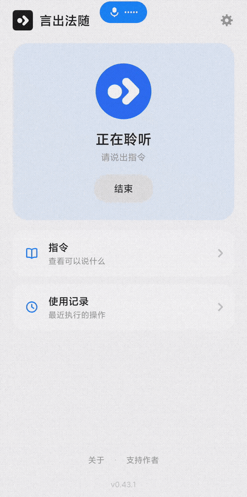
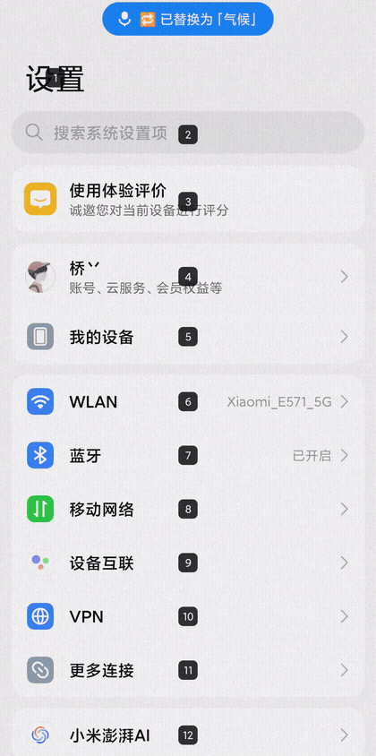
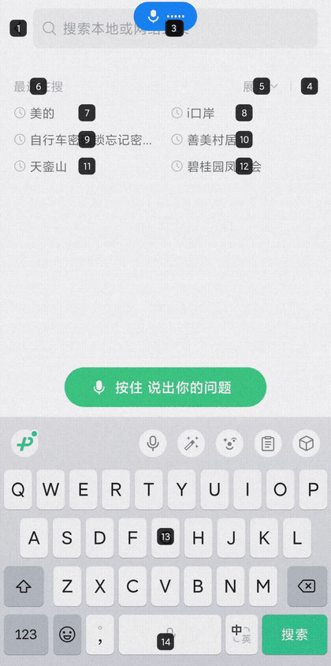
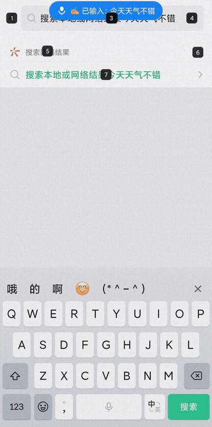

完全离线的安卓中文语音控制软件。屏幕上的每个元素都有编号，说出编号即可点击——滑动、听写、改字、打开应用，全程不动手，也全程不联网。为双手不便的人打造，同样适合想解放双手的你。
以下全部来自真实手机屏幕录制——就是测试者每天在用的样子。




对标系统级语音助手的能力清单，再加上市面上少有的本土化兼容。
全屏元素自动编号，说「点击 12」即可点中；网格 3×4 还能 5 级缩放，小图标也点得准。
滑动、返回、主页、最近任务、通知中心、锁屏、音量——系统的每个角落都说得到。
说「输入」开始说话，停顿自动落进输入框。不能打字的用户靠它聊天、记事、搜东西。
「把王信豪替换成黄信豪」——精确匹配加拼音模糊找词，说错的字用嘴改。
人名、地名、行业词加进词典，识别优先命中。名单独立管理，绝不干扰操控指令。
「向上滑动」总被听岔？绑定你自己的说法，语音录入零打字，编号 1~50、网格格子也能绑。
指令、词典、设置一键导出成文字，发微信收藏即可；换手机粘贴导入，不用从头再来。
微信 8.0.52+ 里「显示编号 / 点击编号」直接可用，无需电脑授权——重度聊天场景全覆盖。
麦克风是独占资源——占住它，系统语音助手就唤不醒。言出法随把「随时归还」写进了每一层。
识别、匹配、执行全部发生在手机本地。没有云，意味着没有延迟依赖、没有隐私焦虑、没有「服务已断开」。
69 个构建迭代出来的路线图，记住这几个版本号就够了。
黑底圆角方块的编号样式在这一版诞生，后来历经改版又原样请回——它被证明是最耐看的。
灵动岛胶囊、卡片式弹窗、流光反馈，整套界面换装 iOS 设计语言。
摇移微调、音量/锁屏设备控制、80% 音量安全帽、无障碍被关后的静默自愈——从「能跑」到「敢日用」。
说话时胶囊里浮现实时起伏的声波，看得见「它听到你了」。
对标设计稿重做主页、设置、关于页，品牌 logo 定稿。
深色模式三选项；双指放大缩小，小元素也能精准命中。
看门狗会话制定型（硬顶 15 分钟）、指令说明教程化、使用记录导出。
微信里「显示编号 / 点击编号」可用——最重的聊天场景从此不再需要别人帮忙。
1~10 格自调识别灵敏度：往高听得见细声细语，往低防误触。
「向上滑动」总被听成「乡上花东」？语音绑定自己的说法，零打字，保存即生效。
语音听写落笔、语音替换改字、个人词典纠错——聊天和记事全线语音化。
服务以可信读屏身份在场，微信编号免电脑授权直接放行，装机门槛大幅下降。
指令、词典、设置一键导出成一段文字，换机重装粘贴即恢复。
看门狗放宽到每段 5 分钟；编号 1~50、网格 1~12 都能绑定专属说法——同一个崩溃顽疾也在这一版根治。